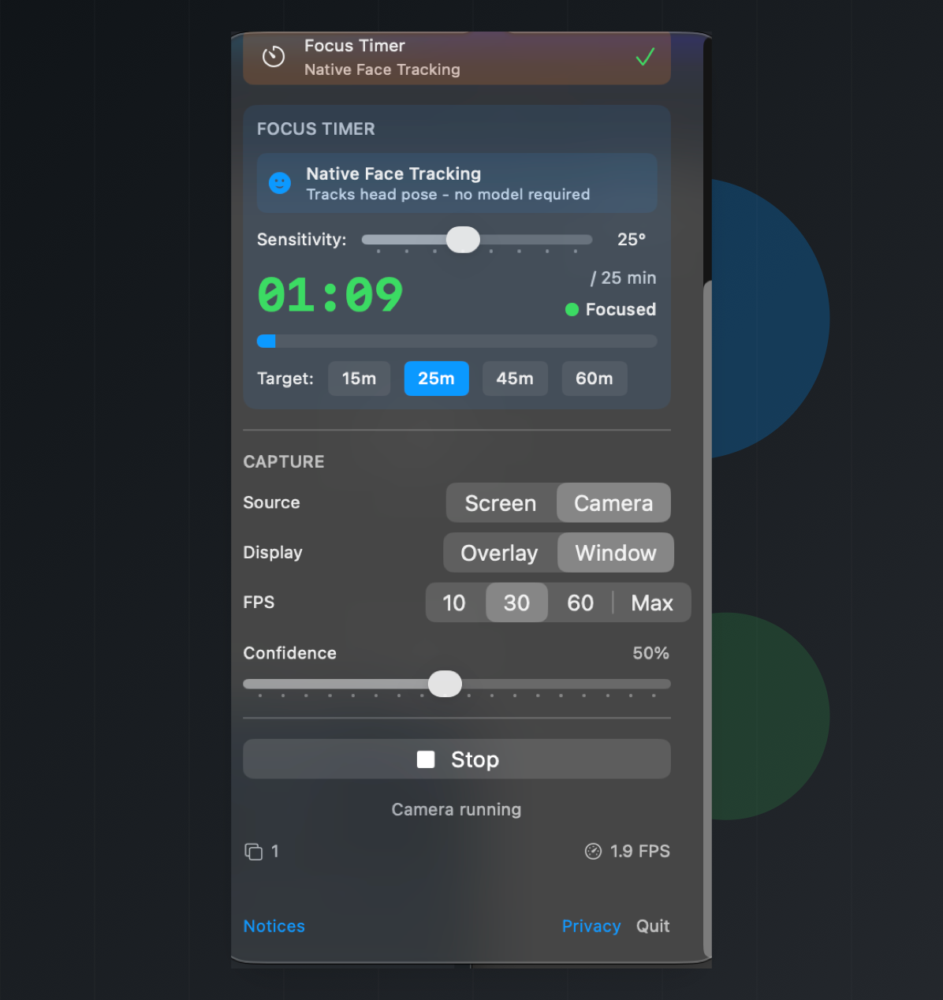

Object detection
Run a bundled SSD MobileNet detector or bring your own Core ML model for labeled detections.
Local Core ML vision for macOS
A menu bar workspace for real-time object detection, emotion monitoring, privacy guardrails, and focus sessions from camera or screen capture.
Four workflows
Run a bundled SSD MobileNet detector or bring your own Core ML model for labeled detections.
Detect faces first, classify the visible emotion, and keep a short recent history.
Count visible people and start the screen saver when your configured threshold is reached.
Use native Apple Vision head-pose tracking to count focused time toward a session goal.
Camera or screen

Model contracts
Mac Vision Tools accepts local Core ML models. Use these contracts when replacing a bundled model, training a new one, or choosing whether a file belongs in detection or emotion mode.
Used by Standard Detection and Privacy Guard for live object labels and person counting.
person class being present and named clearly.
person, bicycle, car, motorcycle, airplane, bus, train, truck, boat, traffic light, fire hydrant, stop sign, parking meter, bench, bird, cat, dog, horse, sheep, cow, elephant, bear, zebra, giraffe, backpack, umbrella, handbag, tie, suitcase, frisbee, skis, snowboard, sports ball, kite, baseball bat, baseball glove, skateboard, surfboard, tennis racket, bottle, wine glass, cup, fork, knife, spoon, bowl, banana, apple, sandwich, orange, broccoli, carrot, hot dog, pizza, donut, cake, chair, couch, potted plant, bed, dining table, toilet, tv, laptop, mouse, remote, keyboard, cell phone, microwave, oven, toaster, sink, refrigerator, book, clock, vase, scissors, teddy bear, hair drier, toothbrush.
person.
Used by Emotion mode after Apple Vision finds and crops a visible face.
Angry, Disgust, Fear, Happy, Neutral, Sad, and Surprise.
Used for face detection, face crops, landmarks, and native focus tracking.
Select local model files when experimenting with your own detector or classifier.
.mlmodel, .mlpackage, or compiled .mlmodelc files and folders selected from your Mac.
person.
For export details, see the model replacement notes. For bundled notices, see the app's Notices view and repository credits.
On-device by design
Mac Vision Tools uses Core ML, Vision, AVFoundation, and ScreenCaptureKit on your Mac. Camera and screen frames are processed for live detections and are not saved by the app.
Permissions are explicit: camera capture needs Camera access, and screen capture needs Screen Recording access in macOS System Settings.
The app does not create accounts, run analytics, track users, or send camera or screen content to a server. Custom Core ML models selected by the user stay on the Mac.
Privacy Guard starts the macOS screen saver when the configured person threshold is reached. macOS controls whether the screen saver requires a password.
Open source macOS utility
The app ships with bundled models and also accepts custom Core ML model files for mode-specific experiments.